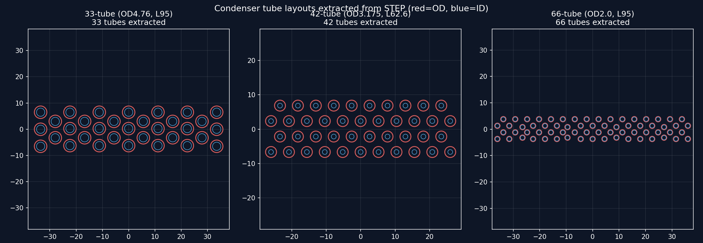
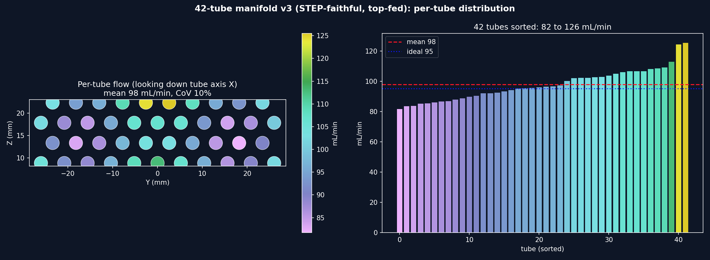
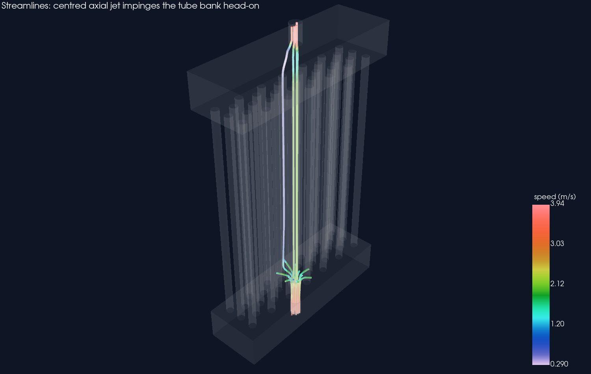
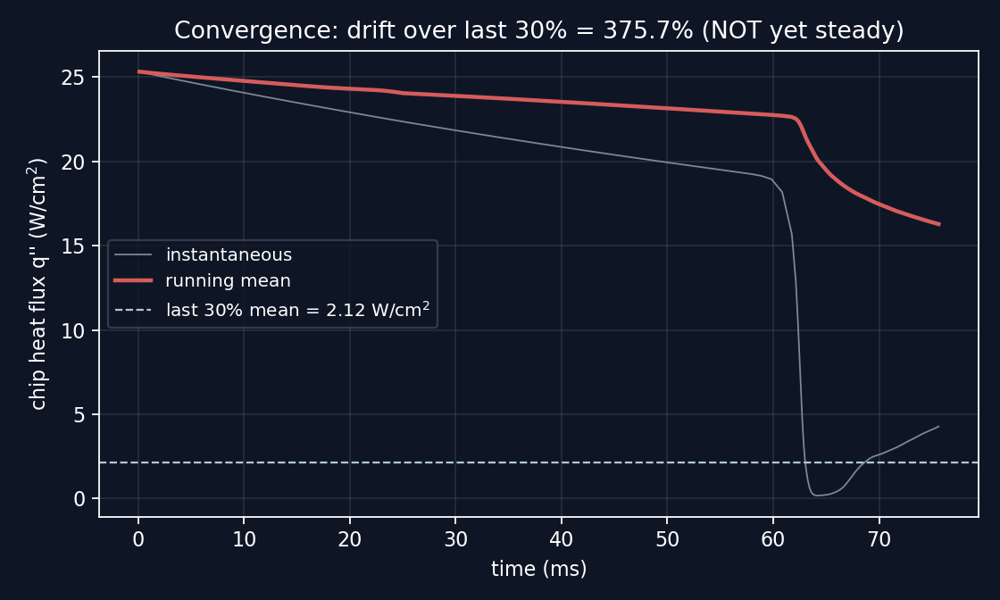

2D + 3D
VOF PHASE-CHANGE CASES
Two OpenFOAM campaigns support the chamber work. The first asks a design question the experiments could not isolate: how evenly do three condenser manifold generations feed their tube bundles? The second builds a volume-of-fluid phase-change framework for the chamber itself, calibrated on measured boiling curves, and presented under a strict integrity standard: no unconverged field is ever shown as a result.
A submerged condenser only works if coolant actually reaches all of its tubes. Three chamber generations used three feed designs, and single-phase conjugate simulations of each, meshed from the as-built geometry, answer how evenly each distributes flow across its bundle.

| Generation | Tube ID (mm) | Inlet model | Flow CoV | Distribution |
|---|---|---|---|---|
| 33-tube | 3.14 | single centred port, as built | 131% | bullseye: one tube carries ~8× the mean |
| 42-tube | 1.39 | top-fed manifolds, as built | 10% | uniform, validated geometry |
| 66-tube | 1.60 | simplified centreline feed | 57% | centred jet favors middle tubes |
The caveat travels with the table: the three cases use different inlet fidelities, so the CoV column is not a clean apparatus comparison. The 42-tube number is the meaningful one, a faithful as-built model of the validated geometry. The 66-tube figure is inflated by its simplified centreline-jet inlet; its real lofted diffuser would distribute far better. What does transfer cleanly is the mechanism: wide bores make a tube bundle hydraulically near-invisible, so distribution is governed by the manifold feed geometry, not by tube count. That lesson shaped the next design.


The second campaign simulates the boiling chamber itself with a volume-of-fluid phase-change solver. A 2D case calibrates the Lee-model mass-transfer coefficients against measured boiling curves on the validated 42-tube plain configuration, and reproduces both regimes that matter: stable nucleate boiling at moderate superheat and the vapor-blanket collapse near CHF. The 3D case carries the calibrated closure onto the real chamber geometry, meshed with snappyHexMesh around the actual tube bundle STL.

The framework paper is written under one rule: no unconverged or surrogate field is shown as a result. The 2D calibration and regime studies are results; the 3D production run to stationarity is stated as the remaining work, defined by what it requires rather than dressed up as done. A CFD framework you can trust is one that tells you exactly where its evidence stops.